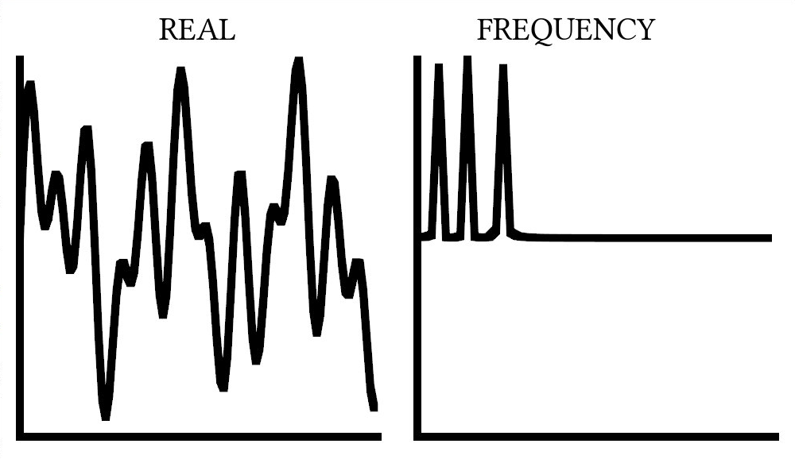
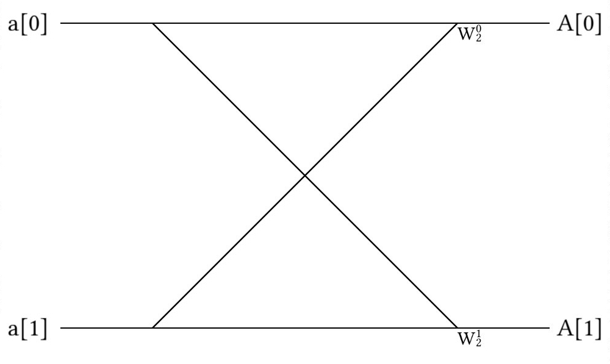
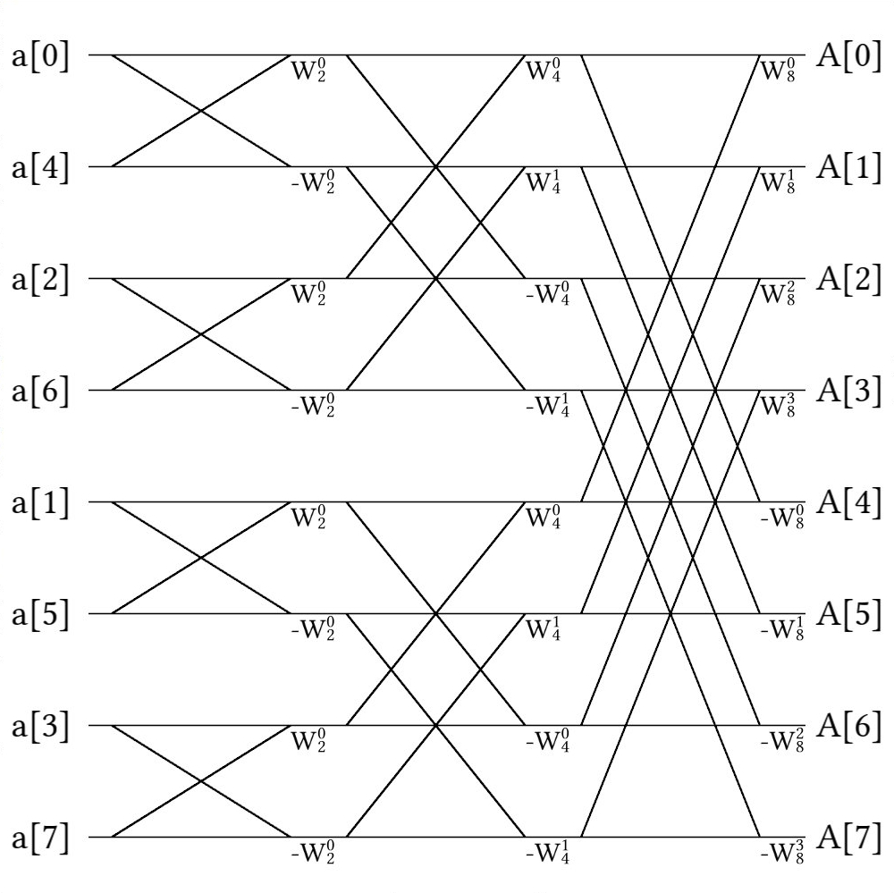

What Makes a Fourier Transform Fast?
If there were ever an algorithm to radically change the landscape of computer science and engineering by making seemingly impossible problems possible, it would be the Fast Fourier Transform (FFT). On the surface, the algorithm seems like a simple application of recursion, and in principle, that is exactly what it is; however, the Fourier Transform is no ordinary transform -- it allows researchers and engineers to easily bounce back and forth between real space and frequency space and is the heart of many physics and engineering applications. From calculating superfluid vortex positions to super-resolution imaging, Fourier Transforms lay at the heart of many scientific disciplines and are essential to many algorithms we will cover later in this book.
Simply put, the Fourier Transform is a beautiful application of complex number systems; however, it would rarely be used today if not for the ability to quickly perform the operation with Fast Fourier Transform, first introduced by the great Frederick Gauss in 1805 and later independently discovered by James Cooley and John Tukey in 1965 [1]. Gauss (of course) already had too many things named after him and Cooley and Tukey both had cooler names, so the most common algorithm for FFT's today is known as the Cooley-Tukey algorithm.
What is a Fourier Transform?
To an outsider, the Fourier Transform looks like a mathematical mess -- certainly a far cry from the heroic portal between two domains I have depicted it to be; however, like most things, it's not as bad as it initially appears to be. So, here it is in all it's glory!
and
Where represents a function in frequency space, represents a value in frequency space, represents a function in real space, and represents a value in the real space. Note here that the only difference between the two exponential terms is a minus sign in the transformation to frequency space. As I mentioned, this is not intuitive syntax, so please allow me to explain a bit.
Firstly, what does the Fourier Transform do?
If we take a sum sinusoidal functions (like or ), we might find a complicated mess of waves between . Each constituent wave can be described by only one value: . So, instead of representing these curves as seen above, we could instead describe them as peaks in frequency space, as shown below.

This is what the Fourier Transform does! After performing the transform, it is now much, much easier to understand precisely which frequencies are in our waveform, which is essential to most areas of signal processing.
Now, how does this relate to the transformations above? Well, the easiest way is to substitute in the Euler's formula:
This clearly turns our function in frequency space into:
and our function in real space into:
Here, the and functions are clearly written in the formulas, so it looks much friendlier, right? This means that a point in real space is defined by the integral over all space of it's corresponding frequency function multiplied by sinusoidal oscillations.
Truth be told, even after seeing this math, I still didn't understand Fourier Transforms. Truth be told, I didn't understand it fully until I discretized real and frequency space to create the Discrete Fourier Transform (DFT), which is the only way to implement Fourier Transforms in code.
What is a Discrete Fourier Transform?
In principle, the Discrete Fourier Transform (DFT) is simply the Fourier transform with summations instead of integrals:
and
Where and are sequences of numbers in frequency and real space, respectively. In principle, this is no easier to understand than the previous case! For some reason, though, putting code to this transformation really helped me figure out what was actually going on.
function DFT(x)
N = length(x)
# We want two vectors here for real space (n) and frequency space (k)
n = 0:N-1
k = n'
transform_matrix = exp.(-2im*pi*n*k/N)
return transform_matrix*x
end
void dft(double complex *X, const size_t N) {
double complex tmp[N];
for (size_t i = 0; i < N; ++i) {
tmp[i] = 0;
for (size_t j = 0; j < N; ++j) {
tmp[i] += X[j] * cexp(-2.0 * M_PI * I * j * i / N);
}
}
memcpy(X, tmp, N * sizeof(*X));
}
(defn dft
"take a vector of real numbers and return a vector of frequency
space"
[vx]
(let [len (count vx)]
(matrix-mult
(partition len
(for [n (range len)
k (range len)]
;; expresion below is
;; e^(n*k*2*pi*(1/len)*(-i))
(c/exp (c/* n k
2 Math/PI
(/ len)
(c/complex 0 -1)))))
vx)))
template <typename Iter>
void dft(Iter X, Iter last) {
const auto N = last - X;
std::vector<complex> tmp(N);
for (auto i = 0; i < N; ++i) {
for (auto j = 0; j < N; ++j) {
tmp[i] += X[j] * exp(complex(0, -2.0 * M_PI * i * j / N));
}
}
std::copy(std::begin(tmp), std::end(tmp), X);
}
function DFT(x)
N = length(x)
# We want two vectors here for real space (n) and frequency space (k)
n = 0:N-1
k = n'
transform_matrix = exp.(-2im*pi*n*k/N)
return transform_matrix*x
end
def dft(X):
N = len(X)
temp = [0]*N
for i in range(N):
for k in range(N):
temp[i] += X[k] * exp(-2.0j*pi*i*k/N)
return temp
function DFT(x)
N = length(x)
# We want two vectors here for real space (n) and frequency space (k)
n = 0:N-1
k = n'
transform_matrix = exp.(-2im*pi*n*k/N)
return transform_matrix*x
end
In this function, we define n to be a set of integers from and arrange them to be a column.
We then set k to be the same thing, but in a row.
This means that when we multiply them together, we get a matrix, but not just any matrix!
This matrix is the heart to the transformation itself!
M = [1.0+0.0im 1.0+0.0im 1.0+0.0im 1.0+0.0im;
1.0+0.0im 6.12323e-17-1.0im -1.0-1.22465e-16im -1.83697e-16+1.0im;
1.0+0.0im -1.0-1.22465e-16im 1.0+2.44929e-16im -1.0-3.67394e-16im;
1.0+0.0im -1.83697e-16+1.0im -1.0-3.67394e-16im 5.51091e-16-1.0im]
It was amazing to me when I saw the transform for what it truly was: an actual transformation matrix! That said, the Discrete Fourier Transform is slow -- primarily because matrix multiplication is slow, and as mentioned before, slow code is not particularly useful. So what was the trick that everyone used to go from a Discrete Fourier Transform to a Fast Fourier Transform?
Recursion!
The Cooley-Tukey Algorithm
The problem with using a standard DFT is that it requires a large matrix multiplications and sums over all elements, which are prohibitively complex operations. The Cooley-Tukey algorithm calculates the DFT directly with fewer summations and without matrix multiplications. If necessary, DFT's can still be calculated directly at the early stages of the FFT calculation. The trick to the Cooley-Tukey algorithm is recursion. In particular, we split the matrix we wish to perform the FFT on into two parts: one for all elements with even indices and another for all odd indices. We then proceed to split the array again and again until we have a manageable array size to perform a DFT (or similar FFT) on. We can also perform a similar re-ordering by using a bit reversal scheme, where we output each array index's integer value in binary and flip it to find the new location of that element. With recursion, we can reduce the complexity to , which is a feasible operation.
In the end, the code looks like:
function cooley_tukey(x)
N = length(x)
if (N > 2)
x_odd = cooley_tukey(x[1:2:N])
x_even = cooley_tukey(x[2:2:N])
else
x_odd = x[1]
x_even = x[2]
end
n = 0:N-1
half = div(N,2)
factor = exp.(-2im*pi*n/N)
return vcat(x_odd .+ x_even .* factor[1:half],
x_odd .- x_even .* factor[1:half])
end
void cooley_tukey(double complex *X, const size_t N) {
if (N >= 2) {
double complex tmp [N / 2];
for (size_t i = 0; i < N / 2; ++i) {
tmp[i] = X[2*i + 1];
X[i] = X[2*i];
}
for (size_t i = 0; i < N / 2; ++i) {
X[i + N / 2] = tmp[i];
}
cooley_tukey(X, N / 2);
cooley_tukey(X + N / 2, N / 2);
for (size_t i = 0; i < N / 2; ++i) {
X[i + N / 2] = X[i] - cexp(-2.0 * I * M_PI * i / N) * X[i + N / 2];
X[i] -= (X[i + N / 2]-X[i]);
}
}
}
(defn fft [vx]
(let [len (count vx)]
(if (= len 1)
vx
;;else
(let [;; take values of vx in the even indices
even-indices (keep-indexed #(if (even? %1) %2) vx)
;; take values in the odd indices
odd-indices (keep-indexed #(if (odd? %1) %2) vx)
;; recursion
even-fft (fft even-indices)
odd-fft (fft odd-indices)
;; make a sequence of e^(-2pi*i*k/N) where N is the length
;; vx and k range from 0 to N/2
omegas-half (map
(comp c/exp
(partial c/*
(/ len)
2 Math/PI
(c/complex 0 -1)))
(range 0 (quot len 2)))
;; take the negative of the first sequence because
;; e^(-2pi*i*(k+N/2)/N=-e^(-2pi*i*k/N) where k ranges from
;; 0 to N/2
omegas-2half (map c/- omegas-half)
mult-add (partial map #(c/+ %3 (c/* %1 %2)))]
(concat (mult-add omegas-half odd-fft even-fft)
(mult-add omegas-2half odd-fft even-fft))))))
template <typename Iter>
void cooley_tukey(Iter first, Iter last) {
auto size = last - first;
if (size >= 2) {
// split the range, with even indices going in the first half,
// and odd indices going in the last half.
auto temp = std::vector<complex>(size / 2);
for (int i = 0; i < size / 2; ++i) {
temp[i] = first[i * 2 + 1];
first[i] = first[i * 2];
}
for (int i = 0; i < size / 2; ++i) {
first[i + size / 2] = temp[i];
}
// recurse the splits and butterflies in each half of the range
auto split = first + size / 2;
cooley_tukey(first, split);
cooley_tukey(split, last);
// now combine each of those halves with the butterflies
for (int k = 0; k < size / 2; ++k) {
auto w = std::exp(complex(0, -2.0 * pi * k / size));
auto& bottom = first[k];
auto& top = first[k + size / 2];
top = bottom - w * top;
bottom -= top - bottom;
}
}
}
fft :: [Complex Double] -> [Complex Double]
fft x = let n = length x
i = 0 :+ 1
w = M.fromList [(k%n, exp ((-2)*pi*i*(fromIntegral k)/(fromIntegral n)) ) | k<-[0..n-1]]
arr = fft' n w (listArray (0,n-1) x)
in [arr!k | k<-[0..n-1]]
where
fft' 1 _ x = x
fft' n w x = let n2 = div n 2
e = fft' n2 w (listArray (0, n2-1) [x!k | k<-[0,2..n-1]])
o = fft' n2 w (listArray (0, n2-1) [x!k | k<-[1,3..n-1]])
in array (0, n-1) $ concat [[(k, e!k + o!k * w M.!(k%n)),
(k + n2, e!k - o!k * w M.!(k%n))]
| k <- [0..n2-1]]
def cooley_tukey(X):
N = len(X)
if N <= 1:
return X
even = cooley_tukey(X[0::2])
odd = cooley_tukey(X[1::2])
temp = [i for i in range(N)]
for k in range(N//2):
temp[k] = even[k] + exp(-2j*pi*k/N) * odd[k]
temp[k+N//2] = even[k] - exp(-2j*pi*k/N)*odd[k]
return temp
function cooley_tukey(x)
N = length(x)
if (N > 2)
x_odd = cooley_tukey(x[1:2:N])
x_even = cooley_tukey(x[2:2:N])
else
x_odd = x[1]
x_even = x[2]
end
n = 0:N-1
half = div(N,2)
factor = exp.(-2im*pi*n/N)
return vcat(x_odd .+ x_even .* factor[1:half],
x_odd .- x_even .* factor[1:half])
end
As a side note, we are enforcing that the array must be a power of 2 for the operation to work. This is a limitation of the fact that we are using recursion and dividing the array in 2 every time; however, if your array is not a power of 2, you can simply pad the leftover space with 0's until your array is a power of 2.
The above method is a perfectly valid FFT; however, it is missing the pictorial heart and soul of the Cooley-Tukey algorithm: Butterfly Diagrams.
Butterfly Diagrams
Butterfly Diagrams show where each element in the array goes before, during, and after the FFT. As mentioned, the FFT must perform a DFT. This means that even though we need to be careful about how we add elements together, we are still ultimately performing the following operation:
However, after shuffling the initial array (by bit reversing or recursive subdivision), we perform the matrix multiplication of the terms in pieces. Basically, we split the array into a series of omega values:
And at each step, we use the appropriate term. For example, imagine we need to perform an FFT of an array of only 2 elements. We can represent this addition with the following (radix-2) butterfly:

Here, the diagram means the following:
However, it turns out that the second half of our array of values is always the negative of the first half, so , so we can use the following butterfly diagram:

With the following equations:
By swapping out the second value in this way, we can save a good amount of space. Now imagine we need to combine more elements. In this case, we start with simple butterflies, as shown above, and then sum butterflies of butterflies. For example, if we have 8 elements, this might look like this:

Note that we can perform a DFT directly before using any butterflies, if we so desire, but we need to be careful with how we shuffle our array if that's the case. In the code snippet provided in the previous section, the subdivision was performed in the same function as the concatenation, so the ordering was always correct; however, if we were to re-order with bit-reversal, this might not be the case.
For example, take a look at the ordering of FFT (found on wikipedia) that performs the DFT shortcut:

Here, the ordering of the array was simply divided into even and odd elements once, but they did not recursively divide the arrays of even and odd elements again because they knew they would perform a DFT soon thereafter.
Ultimately, that's all I want to say about Fourier Transforms for now, but this chapter still needs a good amount of work! I'll definitely come back to this at some point, so let me know what you liked and didn't like and we can go from there!
Bibliography
| 1 | Cooley, James W and Tukey, John W, An algorithm for the machine calculation of complex Fourier series, JSTOR, 1965. |
Example Code
To be clear, the example code this time will be complicated and requires the following functions:
- An FFT library (either in-built or something like FFTW)
- An approximation function to tell if two arrays are similar
As mentioned in the text, the Cooley-Tukey algorithm may be implemented either recursively or non-recursively, with the recursive method being much easier to implement. I would ask that you implement either the recursive or non-recursive methods (or both, if you feel so inclined). If the language you want to write your implementation in is already used, please append your code to the already existing codebase. As before, pull requests are favoured.
Note: I implemented this in Julia because the code seems more straightforward in Julia; however, if you wish to write better Julia code or better code in your own language, please feel free to do so! I do not claim that this is the most efficient way to implement the Cooley-Tukey method, so if you have a better way to do it, feel free to implement it that way!
using FFTW
#simple DFT function
function DFT(x)
N = length(x)
# We want two vectors here for real space (n) and frequency space (k)
n = 0:N-1
k = n'
transform_matrix = exp.(-2im*pi*n*k/N)
return transform_matrix*x
end
# Implementing the Cooley-Tukey Algorithm
function cooley_tukey(x)
N = length(x)
if (N > 2)
x_odd = cooley_tukey(x[1:2:N])
x_even = cooley_tukey(x[2:2:N])
else
x_odd = x[1]
x_even = x[2]
end
n = 0:N-1
half = div(N,2)
factor = exp.(-2im*pi*n/N)
return vcat(x_odd .+ x_even .* factor[1:half],
x_odd .- x_even .* factor[1:half])
end
function bitreverse(a::Array)
# First, we need to find the necessary number of bits
digits = convert(Int,ceil(log2(length(a))))
indices = [i for i = 0:length(a)-1]
bit_indices = []
for i = 1:length(indices)
push!(bit_indices, bitstring(indices[i]))
end
# Now stripping the unnecessary numbers
for i = 1:length(bit_indices)
bit_indices[i] = bit_indices[i][end-digits:end]
end
# Flipping the bits
for i =1:length(bit_indices)
bit_indices[i] = reverse(bit_indices[i])
end
# Replacing indices
for i = 1:length(indices)
indices[i] = 0
for j = 1:digits
indices[i] += 2^(j-1) * parse(Int, string(bit_indices[i][end-j]))
end
indices[i] += 1
end
b = [float(i) for i = 1:length(a)]
for i = 1:length(indices)
b[i] = a[indices[i]]
end
return b
end
function iterative_cooley_tukey(x)
N = length(x)
logN = convert(Int,ceil(log2(length(x))))
bnum = div(N,2)
stride = 0;
x = bitreverse(x)
z = [Complex(x[i]) for i = 1:length(x)]
for i = 1:logN
stride = div(N, bnum)
for j = 0:bnum-1
start_index = j*stride + 1
y = butterfly(z[start_index:start_index + stride - 1])
for k = 1:length(y)
z[start_index+k-1] = y[k]
end
end
bnum = div(bnum,2)
end
return z
end
function butterfly(x)
N = length(x)
half = div(N,2)
n = [i for i = 0:N-1]
half = div(N,2)
factor = exp.(-2im*pi*n/N)
y = [0 + 0.0im for i = 1:length(x)]
for i = 1:half
y[i] = x[i] + x[half+i]*factor[i]
y[half+i] = x[i] - x[half+i]*factor[i]
end
return y
end
function approx(x, y)
val = true
for i = 1:length(x)
if (abs(x[i]) - abs(y[i]) > 1e-5)
val = false
end
end
println(val)
end
function main()
x = rand(128)
y = cooley_tukey(x)
z = iterative_cooley_tukey(x)
w = fft(x)
approx(y, w)
approx(z, w)
end
main()
#include <complex.h>
#include <math.h>
#include <stdio.h>
#include <stdlib.h>
#include <string.h>
#include <time.h>
void dft(double complex *X, const size_t N) {
double complex tmp[N];
for (size_t i = 0; i < N; ++i) {
tmp[i] = 0;
for (size_t j = 0; j < N; ++j) {
tmp[i] += X[j] * cexp(-2.0 * M_PI * I * j * i / N);
}
}
memcpy(X, tmp, N * sizeof(*X));
}
void cooley_tukey(double complex *X, const size_t N) {
if (N >= 2) {
double complex tmp [N / 2];
for (size_t i = 0; i < N / 2; ++i) {
tmp[i] = X[2*i + 1];
X[i] = X[2*i];
}
for (size_t i = 0; i < N / 2; ++i) {
X[i + N / 2] = tmp[i];
}
cooley_tukey(X, N / 2);
cooley_tukey(X + N / 2, N / 2);
for (size_t i = 0; i < N / 2; ++i) {
X[i + N / 2] = X[i] - cexp(-2.0 * I * M_PI * i / N) * X[i + N / 2];
X[i] -= (X[i + N / 2]-X[i]);
}
}
}
void bit_reverse(double complex *X, size_t N) {
for (int i = 0; i < N; ++i) {
int n = i;
int a = i;
int count = (int)log2((double)N) - 1;
n >>= 1;
while (n > 0) {
a = (a << 1) | (n & 1);
count--;
n >>= 1;
}
n = (a << count) & ((1 << (int)log2((double)N)) - 1);
if (n > i) {
double complex tmp = X[i];
X[i] = X[n];
X[n] = tmp;
}
}
}
void iterative_cooley_tukey(double complex *X, size_t N) {
bit_reverse(X, N);
for (int i = 1; i <= log2((double)N); ++i) {
int stride = pow(2, i);
double complex w = cexp(-2.0 * I * M_PI / stride);
for (size_t j = 0; j < N; j += stride) {
double complex v = 1.0;
for (size_t k = 0; k < stride / 2; ++k) {
X[k + j + stride / 2] = X[k + j] - v * X[k + j + stride / 2];
X[k + j] -= (X[k + j + stride / 2] - X[k + j]);
v *= w;
}
}
}
}
void approx(double complex *X, double complex *Y, size_t N) {
for (size_t i = 0; i < N; ++i) {
printf("%f\n", cabs(X[i]) - cabs(Y[i]));
}
}
int main() {
srand(time(NULL));
double complex x[64], y[64], z[64];
for (size_t i = 0; i < 64; ++i) {
x[i] = rand() / (double) RAND_MAX;
y[i] = x[i];
z[i] = x[i];
}
cooley_tukey(y, 64);
iterative_cooley_tukey(z, 64);
approx(y, z, 64);
return 0;
}
(ns fft.core
(:require [complex.core :as c]))
;; complex is a jar for complex numbers
;; https://github.com/alanforr/complex
;; add [complex "0.1.11"] to :dependencies in your project.clj
;; and run lein repl or lein deps in the terminal
(defn matrix-mult
"take a matrix m and a vector v which length is number of columns
,return a vector of applying dot-product between v and each row of
m. the returned vector's length is the number of rows of m"
[m v]
(mapv (comp (partial apply c/+)
(partial map c/* v))
m))
(defn dft
"take a vector of real numbers and return a vector of frequency
space"
[vx]
(let [len (count vx)]
(matrix-mult
(partition len
(for [n (range len)
k (range len)]
;; expresion below is
;; e^(n*k*2*pi*(1/len)*(-i))
(c/exp (c/* n k
2 Math/PI
(/ len)
(c/complex 0 -1)))))
vx)))
(defn fft [vx]
(let [len (count vx)]
(if (= len 1)
vx
;;else
(let [;; take values of vx in the even indices
even-indices (keep-indexed #(if (even? %1) %2) vx)
;; take values in the odd indices
odd-indices (keep-indexed #(if (odd? %1) %2) vx)
;; recursion
even-fft (fft even-indices)
odd-fft (fft odd-indices)
;; make a sequence of e^(-2pi*i*k/N) where N is the length
;; vx and k range from 0 to N/2
omegas-half (map
(comp c/exp
(partial c/*
(/ len)
2 Math/PI
(c/complex 0 -1)))
(range 0 (quot len 2)))
;; take the negative of the first sequence because
;; e^(-2pi*i*(k+N/2)/N=-e^(-2pi*i*k/N) where k ranges from
;; 0 to N/2
omegas-2half (map c/- omegas-half)
mult-add (partial map #(c/+ %3 (c/* %1 %2)))]
(concat (mult-add omegas-half odd-fft even-fft)
(mult-add omegas-2half odd-fft even-fft))))))
(defn -main [& args]
(let [vx [0 1 2 3]
len (count vx)
;; calculate the next power of 2 after len
;; the reason behind this is to fill them with zeros for fft
next-len (->>
[len 2]
(map #(Math/log %))
(apply /)
Math/ceil
(Math/pow 2)
int)
;; add zeros at the end of vx
complete-vx (into vx (repeat (- next-len len) 0))
fft-cvx (fft complete-vx)
dft-cvx (dft complete-vx)
diffv (mapv c/- fft-cvx dft-cvx)]
(println "vx:" vx)
(println "complete-vx:" complete-vx)
(println "result from fft:" (map c/stringify fft-cvx))
(println "result from dft:" (map c/stringify dft-cvx))
(println "difference: " (map c/stringify diffv))))
// written by Gathros, modernized by Nicole Mazzuca.
#include <algorithm>
#include <array>
#include <complex>
#include <cstdint>
#include <vector>
// These headers are for presentation not for the algorithm.
#include <iomanip>
#include <iostream>
#include <random>
using std::begin;
using std::end;
using std::swap;
using std::size_t;
using complex = std::complex<double>;
static const double pi = 3.14159265358979323846264338327950288419716;
template <typename Iter>
void dft(Iter X, Iter last) {
const auto N = last - X;
std::vector<complex> tmp(N);
for (auto i = 0; i < N; ++i) {
for (auto j = 0; j < N; ++j) {
tmp[i] += X[j] * exp(complex(0, -2.0 * M_PI * i * j / N));
}
}
std::copy(std::begin(tmp), std::end(tmp), X);
}
// `cooley_tukey` does the cooley-tukey algorithm, recursively
template <typename Iter>
void cooley_tukey(Iter first, Iter last) {
auto size = last - first;
if (size >= 2) {
// split the range, with even indices going in the first half,
// and odd indices going in the last half.
auto temp = std::vector<complex>(size / 2);
for (int i = 0; i < size / 2; ++i) {
temp[i] = first[i * 2 + 1];
first[i] = first[i * 2];
}
for (int i = 0; i < size / 2; ++i) {
first[i + size / 2] = temp[i];
}
// recurse the splits and butterflies in each half of the range
auto split = first + size / 2;
cooley_tukey(first, split);
cooley_tukey(split, last);
// now combine each of those halves with the butterflies
for (int k = 0; k < size / 2; ++k) {
auto w = std::exp(complex(0, -2.0 * pi * k / size));
auto& bottom = first[k];
auto& top = first[k + size / 2];
top = bottom - w * top;
bottom -= top - bottom;
}
}
}
// note: (last - first) must be less than 2**32 - 1
template <typename Iter>
void sort_by_bit_reverse(Iter first, Iter last) {
// sorts the range [first, last) in bit-reversed order,
// by the method suggested by the FFT
auto size = last - first;
for (std::uint32_t i = 0; i < size; ++i) {
auto b = i;
b = (((b & 0xaaaaaaaa) >> 1) | ((b & 0x55555555) << 1));
b = (((b & 0xcccccccc) >> 2) | ((b & 0x33333333) << 2));
b = (((b & 0xf0f0f0f0) >> 4) | ((b & 0x0f0f0f0f) << 4));
b = (((b & 0xff00ff00) >> 8) | ((b & 0x00ff00ff) << 8));
b = ((b >> 16) | (b << 16)) >> (32 - std::uint32_t(log2(size)));
if (b > i) {
swap(first[b], first[i]);
}
}
}
// `iterative_cooley_tukey` does the cooley-tukey algorithm iteratively
template <typename Iter>
void iterative_cooley_tukey(Iter first, Iter last) {
sort_by_bit_reverse(first, last);
// perform the butterfly on the range
auto size = last - first;
for (int stride = 2; stride <= size; stride *= 2) {
auto w = exp(complex(0, -2.0 * pi / stride));
for (int j = 0; j < size; j += stride) {
auto v = complex(1.0);
for (int k = 0; k < stride / 2; k++) {
first[k + j + stride / 2] =
first[k + j] - v * first[k + j + stride / 2];
first[k + j] -= (first[k + j + stride / 2] - first[k + j]);
v *= w;
}
}
}
}
int main() {
// initalize the FFT inputs
std::random_device random_device;
std::mt19937 rng(random_device());
std::uniform_real_distribution<double> distribution(0.0, 1.0);
std::array<complex, 64> initial;
std::generate(
begin(initial), end(initial), [&] { return distribution(rng); });
auto recursive = initial;
auto iterative = initial;
// Preform an FFT on the arrays.
cooley_tukey(begin(recursive), end(recursive));
iterative_cooley_tukey(begin(iterative), end(iterative));
// Check if the arrays are approximately equivalent
std::cout << std::right << std::setw(16) << "idx" << std::setw(16) << "rec"
<< std::setw(16) << "it" << std::setw(16) << "subtracted" << '\n';
for (size_t i = 0; i < initial.size(); ++i) {
auto rec = recursive[i];
auto it = iterative[i];
std::cout << std::setw(16) << i << std::setw(16) << std::abs(rec)
<< std::setw(16) << std::abs(it) << std::setw(16)
<< (std::abs(rec) - std::abs(it)) << '\n';
}
}
import Data.Complex
import Data.Array
import Data.Ratio
import qualified Data.Map as M
fft :: [Complex Double] -> [Complex Double]
fft x = let n = length x
i = 0 :+ 1
w = M.fromList [(k%n, exp ((-2)*pi*i*(fromIntegral k)/(fromIntegral n)) ) | k<-[0..n-1]]
arr = fft' n w (listArray (0,n-1) x)
in [arr!k | k<-[0..n-1]]
where
fft' 1 _ x = x
fft' n w x = let n2 = div n 2
e = fft' n2 w (listArray (0, n2-1) [x!k | k<-[0,2..n-1]])
o = fft' n2 w (listArray (0, n2-1) [x!k | k<-[1,3..n-1]])
in array (0, n-1) $ concat [[(k, e!k + o!k * w M.!(k%n)),
(k + n2, e!k - o!k * w M.!(k%n))]
| k <- [0..n2-1]]
main = do
print $ fft [0,1,2,3]
from random import random
from cmath import exp, pi
from math import log2
def dft(X):
N = len(X)
temp = [0]*N
for i in range(N):
for k in range(N):
temp[i] += X[k] * exp(-2.0j*pi*i*k/N)
return temp
def cooley_tukey(X):
N = len(X)
if N <= 1:
return X
even = cooley_tukey(X[0::2])
odd = cooley_tukey(X[1::2])
temp = [i for i in range(N)]
for k in range(N//2):
temp[k] = even[k] + exp(-2j*pi*k/N) * odd[k]
temp[k+N//2] = even[k] - exp(-2j*pi*k/N)*odd[k]
return temp
def bitReverse(X):
N = len(X)
temp = [i for i in range(N)]
for k in range(N):
b = sum(1<<(int(log2(N))-1-i) for i in range(int(log2(N))) if k>>i&1)
temp[k] = X[b]
temp[b] = X[k]
return temp
def iterative_cooley_tukey(X):
N = len(X)
X = bitReverse(X)
for i in range(1, int(log2(N)) + 1):
stride = 2**i
w = exp(-2j*pi/stride)
for j in range(0, N, stride):
v = 1
for k in range(stride//2):
X[k + j + stride//2] = X[k + j] - v*X[k + j + stride//2];
X[k + j] -= (X[k + j + stride//2] - X[k + j]);
v *= w;
return X
X = []
for i in range(64):
X.append(random())
Y = cooley_tukey(X)
Z = iterative_cooley_tukey(X)
T = dft(X)
print(all(abs([Y[i] - Z[i] for i in range(64)][j]) < 1 for j in range(64)))
print(all(abs([Y[i] - T[i] for i in range(64)][j]) < 1 for j in range(64)))
Some rather impressive scratch code was submitted by Jie and can be found here: https://scratch.mit.edu/projects/37759604/#editor